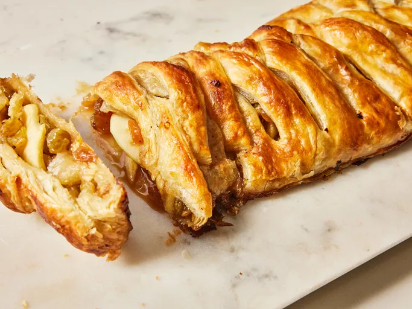

Home
Easy Apple Strudel

Ingredients
- Apples: The tartness from Granny Smith apples perfectly balances the sweet brown sugar.
- Brown sugar: Opt for light brown sugar for the perfect sweet, cozy flavor.
- Golden raisins: Golden raisins take the flavor and texture up a few notches.
- Flour: All-purpose flour thickens the apple strudel filling.
- Puff pastry: Two thawed puff pastry sheets are key to making this easy apple strudel.
- Salt: A pinch of salt enhances the overall flavor, but it won’t make the strudel taste salty.
- Egg and milk: Brushing an egg wash (made with one egg and a tablespoon of whole milk) over the puff pastry before baking ensures a gorgeous golden brown finish.
Recipe
- Preheat the oven to 400 degrees F (200 degrees C). Line a large rimmed baking sheet with parchment paper.
- Place shredded and chopped apples in a large bowl. Stir in brown sugar, golden raisins, flour, and salt; set aside.
- Working with one sheet at a time, place puff pastry on a lightly floured work surface. Roll lightly with a rolling pin into an approximately 10- x 12-inch rectangle. Arrange 1/2 of the apple filling (about 3 cups) down one side of pastry lengthwise.
- Fold pastry lengthwise over apple mixture; dampen edges of pastry with water, then press or crimp edges to seal. Repeat process with 2nd pastry sheet and remaining apple mixture.
- Transfer to prepared baking sheet, leaving at least 2-inches between each pastry. Whisk egg and milk together in a small bowl; brush on top of each pastry. Cut 3 or 4 slits on top of each pastry to allow steam to escape.
- Bake in the preheated oven until golden brown, 30 to 35 minutes.
- Slice, serve, and enjoy!